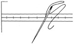
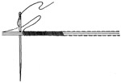
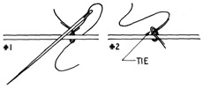
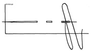
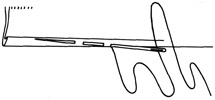
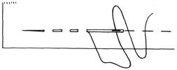
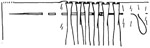
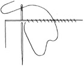
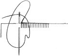
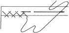

Select any picture to view an
enlargement in a new window
1952—How to Make Hats
by Ruby Carnahan
Fundamental Stitches Used in Millinery
PRACTICE STITCHES
Neat even stitches and faultless workmanship is required to make a professional looking hat. Every stitch must be practiced until perfection is achieved. It is necessary to know where and when to use the different stitches when making a hat which can only be learned by continuous practice and application.
PICK STITCH
- Pick stitch is a tiny even stitch about 1/16" apart. Used on some brim edges and around crowns.
FURRING STITCH
- Used to join felt or fur edges together. Hold two edges of felt together and sew over and over. When seam is finished it will be flat and almost invisible.
TIE STITCH
- Used to fasten trimmings and veilings on hat. Slip needle through material at No. 1 and bring needle back through at No. 2, tie ends and clip thread close to where you have thread tied.
BASTING STITCH
- Take one small stitch and then a long stitch for basting. When removing the basting stitches clip the thread in a long stitch in several places and pull threads out, instead of trying to pull entire basting thread out.
SLIP STITCHING
- Slip stitching is used where invisible sewing is desired on facings and folds, etc. Begin slip stitch by taking a tiny stitch through material and then a long stitch through turned edge of fold.
RUNNING STITCH
- This is the simplest stitch used in sewing, and is used where a strong stitch is unnecessary, for example, gathering shirring and tucking. To make stitches, pass the needle through material, taking several small stitches at a time, before drawing needle through material.
SHIRRING
- Use running stitches making them the same length on both sides. Continue making stitches until you have finished the row, then draw material together to form even gathering.
OVERCASTING STITCH
- Used to sew down edges of material and to apply wire in some places. Sew with close straight stitches, bringing the needle over and over toward you. Do not take stitches too deep or draw thread too tight.
BUTTON HOLE STITCH
- Used to sew wire on frames, etc. Take several over casting stitches then bring needle down to right depth from wrong side having thread behind the eye and under the point of the needle.
CROSS STITCH
- Used to hold down raw edges of material and to sew in name labels. Work from left to right crossing threads at each stitch.
BACK STITCH
- Used to sew two pieces of material together where strength is required. The needle is inserted at the end of the last stitch and brought out the length of a stitch farther on.